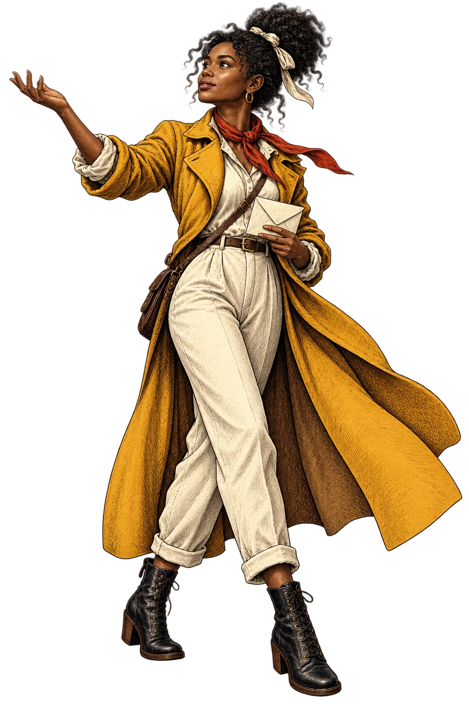
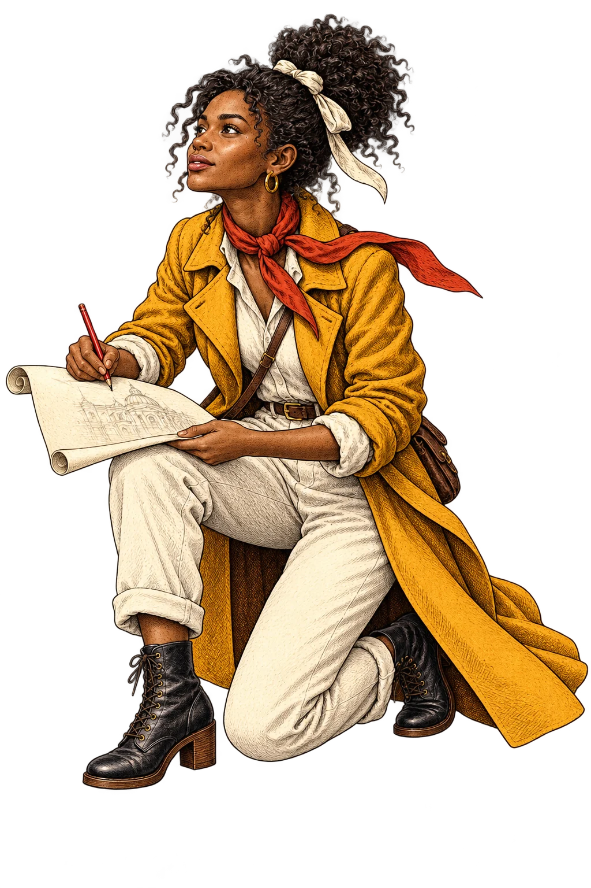
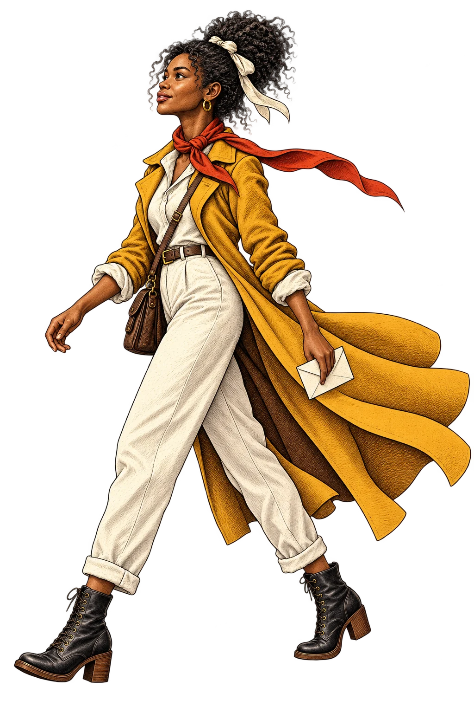

Chapter one / The spark
It startswith aspark.
Nia has an idea. A business she believes in.
And a feeling that it could become something more.

Every new world begins somewhere.
Chapter one / The spark
Nia has an idea. A business she believes in.
And a feeling that it could become something more.

Every new world begins somewhere.

Chapter two / The blueprint
We listen. Sketch. Ask better questions.
Until what makes your business special finds a place on the page.

A little curiosity.
A clearer direction.

Chapter three / The craft
Thoughtful design. Purposeful movement.
Every detail working together, from a big screen to the phone in your hand.
The details make the difference.

Chapter four / A new beginning
A place for your business to be found.
A clear way for customers to take the next step.
Let’s make something worth discovering.

Made in South Africa.
Ready for your world.